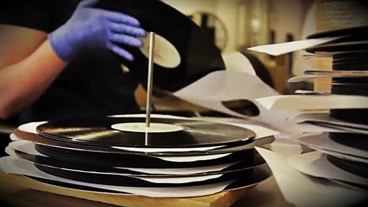
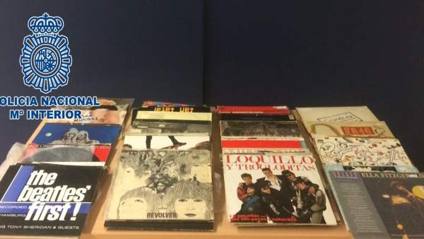

Últimas Noticias
Amazon está llevando a cabo un concurso para regalar discos LP para celebrar el relanzamiento de su tienda de discos de vinilo.
Pero los pronósticos pueden ser adversos: la compañía sólo
regalará un disco de vinilo por día, durante 13 días.
La tienda comenzó su concurso el pasado 23 de octubre, así que quedan pocos días para el sorteo.
En su quinto día, los clientes podrán participar en el concurso para ganar una copia del disco de los Rolling Stones, “Sticky Fingers”, de 1971.
La tienda no sólo vende vinilos. Amazon también vende CDs y música digital, por supuesto. Muchas de las compras de CD vienen con AutoRip,
lo que significa que la bilbioteca digital del comprador se actualizará con la música comprada.
Una de las compañías musicales más grandes del mundo se está volviendo retro.
Sony Music Entertainment dijo la semana pasada que empezará a producir vinilos otra vez, tras casi 3 décadas de haber suspendido su producción.
La medida fue tomada por un dramático aumento en la demanda de música en vinilos en los últimos años, según una portavoz de Sony.
El interés viene de los clientes más jóvenes quienes nunca antes usaron este tipo de grabaciones, así como de los clientes más viejos.
Sony —entre cuyos artistas se encuentran Adele, Beyoncé y Daft Punk— terminó su producción de vinilos en 1989 luego de que los CD monopolizaran el mercado.

Pero a pesar de la actual popularidad de los servicios de música digital como Spotify, las grabaciones old school están disfrutando de un renacimiento.
La firma consultora Deloitte pronostica que la industria de la música en vinilo generará un crecimiento de dos dígitos en 2017 por séptimo año consecutivo,
vendiendo 40 millones de discos y generando unos 900 millones de dólares en ganancias.
Los vinilos podrían representar hasta un 18% de todos los ingresos de música física este año, que podría representar unos 5.000 millones de dólares, dijo Deloitte en un reciente reporte.
Los tornamesas y accesorios relacionados con el vinilo también se están beneficiando como resultado.
Sony y Panasonic introdujeron nuevos modelos de reproductores el año pasado para ganar dinero. Sony dijo que reactivará la producción de vinilos para marzo del otro año en una
fábrica al suroeste de Tokio que será manejada por una de sus subsidiarias. Aún no ha decidido qué géneros de música producirá, según la portavoz.
La firma instaló una máquina de grabación de corte análogo en febrero, que hace copias maestras de discos para producción en masa y ahora está presentando una máquina de impresión, agregó
Agentes de la Policía Nacional han detenido a un hombre que responde a las iniciales de J.H.M., de 44 años de edad y
con numerosos antecedentes policiales, como presunto autor de un delito de robo con fuerza en el interior de un vehículo tras sustraer
presuntamente 3.000 euros en discos de vinilo del interior del turismo.

Según los agentes, J.H.M. robó además otros objetos de valor por un importe
superior a 400 euros; mientras que trató de vender los discos de vinilo en una tienda de compraventa de artículos de segunda mano,
donde ya tenían conocimiento de que se trataba de objetos robados.
La detención se produjo después de que una mujer denunciara que al regresar a su vehículo, que se encontraba estacionado en una calle de Arrecife,
había encontrado el cristal de una de las ventanas fracturado y del interior del mismo faltaban dos maletas con gran cantidad de discos de vinilo,
así como otros objetos de valor por un importe superior a los 3.400 euros, según informó la Policía Nacional en nota de prensa.
Atendiendo a esta información, los agentes pudieron conocer como pocos días después un hombre intentó vender los discos de música de una tienda
de compraventa de artículos de segunda mano. Sin embargo, el responsable del comercio, que ya tenía conocimiento de que se trataba de objetos sustraídos,
puso los hechos en conocimiento de la Policía Nacional, que detuvo al vendedor como presunto autor de un delito de robo con fuerza.
Finalmente, instruido el correspondiente atestado policial, fue remitido a la Autoridad Judicial competente.